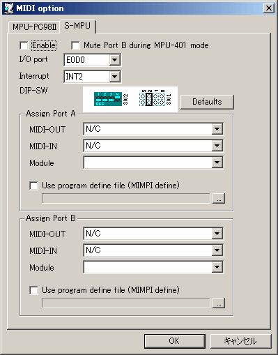

S-MPUを有効にします。
MPU-401互換モードの時にポートBから出力しないようにします。
Super MPUのI/Oポートを設定します。
Super MPUの割り込み番号を設定します。
Super MPUの設定を工場出荷状態に戻します。
Super MPUボード上のディップスイッチ及びジャンパ（仮）です。
ディップスイッチやジャンパをクリックしても設定ができます。
それぞれSuper MPUのMIDIポートA，MIDIポートBに対応しています。
MIDI-OUTのデバイスを指定します。
| Device | 対応するMIDI-OUTデバイス |
|---|---|
| N/C | 未接続状態になります。 |
| MIDI MAPPER | WindowsのデフォルトMIDIデバイスを使用します。 |
| VERMOUTH | MIDI再生にVermouthを使用します。 |
| MIDI-OUTデバイス名 | 指定した MIDI-OUTデバイスを使用します。 |
MIDI-INのデバイスを指定します。
| Device | 対応するMIDI-INデバイス |
|---|---|
| N/C | 未接続状態になります。 |
| MIDI MAPPER | WindowsのデフォルトMIDIデバイスを使用します。 |
| MIDI-INデバイス名 | 指定した MIDI-INデバイスを使用します。 |
Windowsに接続しているMIDI音源を指定します。
この指定は、エミュレーションリセット・終了・MIDI Panicに置いて MIDI音源をリセットするために使用されます。
MIMPI DEFファイルを指定して、音色番号の振り替えを行ないます。
この機能により音色番号が異なる音源間で音色を合せる事ができます。